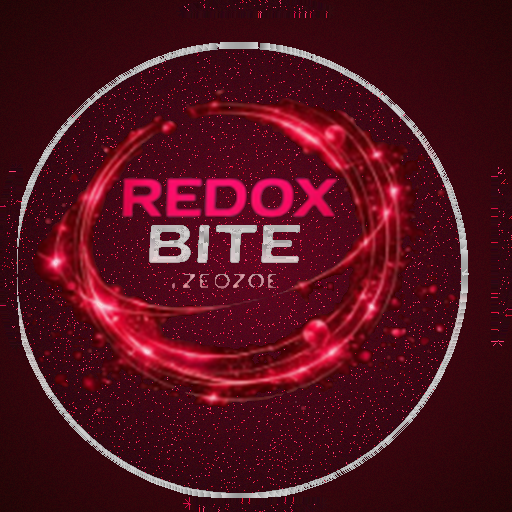
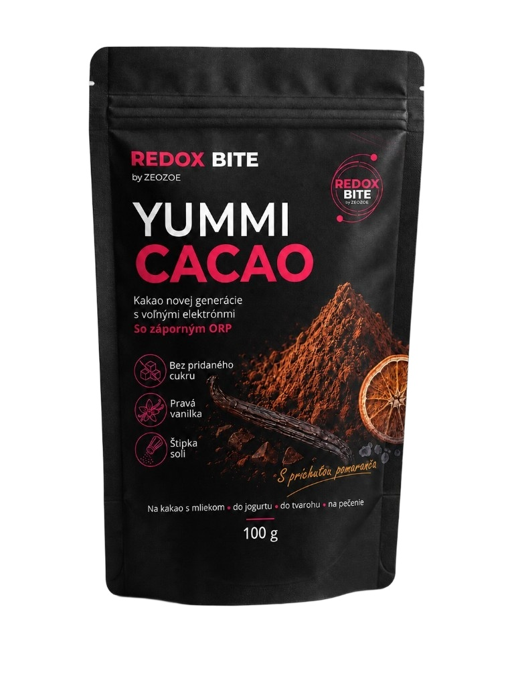
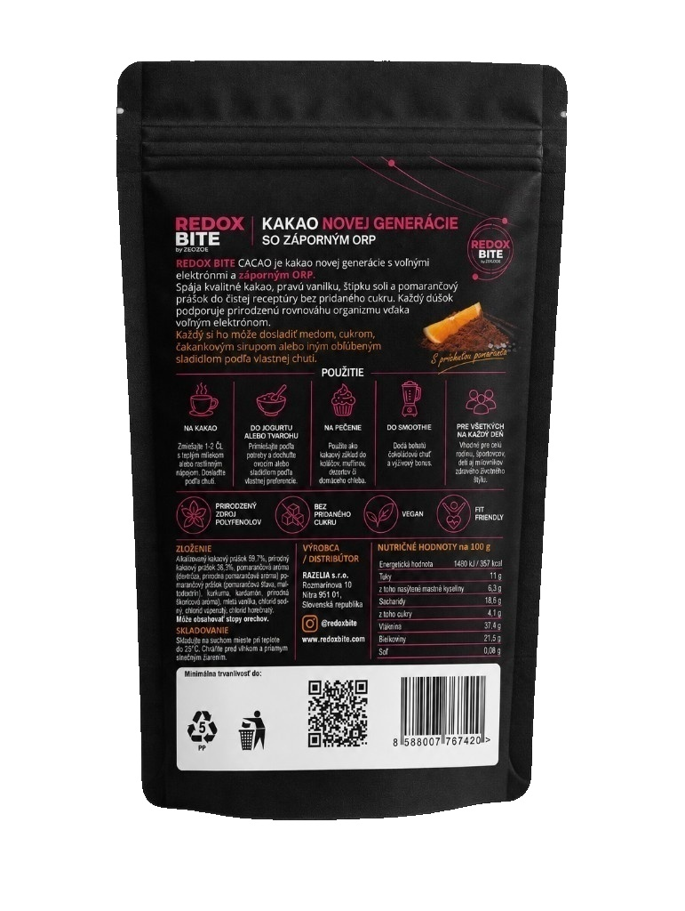

Horúce kakao
Zmiešajte 1–2 čajové lyžičky s teplým mliekom alebo rastlinným nápojom. Oslaďte podľa vlastnej chuti.

REDOX BITE

REDOX BITE
REDOX BITE YUMMI CACAO Pomaranč – kakao bez pridaného cukru, 100 g
REDOX BITE YUMMI CACAO Pomaranč je prémiová kakaová zmes s vysokým obsahom kakaa, sviežou pomarančovou príchuťou a pravou vanilkou. Neobsahuje pridaný cukor a môžete ju použiť na prípravu horúceho kakaa, do smoothie, jogurtu, tvarohu aj pri pečení. Receptúra je navrhnutá na dosiahnutie stabilného záporného ORP po príprave.
100 g
O produkte
Objavte spojenie intenzívnej kakaovej chuti, voňavej vanilky a sviežeho pomaranča. REDOX BITE YUMMI CACAO Pomaranč obsahuje kombináciu alkalizovaného a prírodného kakaového prášku, ktoré spolu tvoria 96 % receptúry.
Kakaovú chuť dopĺňa pomarančový prášok, prírodná pomarančová aróma, pravá vanilka, kurkuma, kardamóm a jemná štipka soli. Výsledkom je aromatická kakaová zmes vhodná na každodennú prípravu teplých aj studených jedál a nápojov.
YUMMI CACAO neobsahuje pridaný cukor. Sladkosť si preto môžete prispôsobiť podľa vlastnej chuti – medom, čakankovým sirupom, cukrom alebo obľúbeným sladidlom.
Receptúra bola vyvinutá s cieľom dosiahnuť stabilné záporné ORP. Tento údaj opisuje fyzikálno-chemickú vlastnosť produktu po príprave a nemení jeho univerzálne využitie v kuchyni.
Hlavné vlastnosti
Použitie
Zmiešajte 1–2 čajové lyžičky s teplým mliekom alebo rastlinným nápojom. Oslaďte podľa vlastnej chuti.
Primiešajte požadované množstvo do jogurtu alebo tvarohu a podľa chuti pridajte ovocie alebo sladidlo.
Pridajte do ovocného, proteínového alebo raňajkového smoothie pre výraznejšiu kakaovo-pomarančovú chuť.
Použite do koláčov, muffinov, dezertov, kaší alebo domáceho pečiva.
Zloženie
Alkalizovaný kakaový prášok 59,7 %, prírodný kakaový prášok 36,3 %, pomarančová aróma (dextróza, prírodná pomarančová aróma), pomarančový prášok (pomarančová šťava, maltodextrín), kurkuma, kardamóm, prírodná škoricová aróma, mletá vanilka, soľ, stabilizátory: chlorid vápenatý (E509), chlorid horečnatý (E511).
Môže obsahovať stopy orechov.
Skladujte v suchu pri teplote do 25 °C, chráňte pred vlhkosťou a slnečným žiarením.
| Energetická hodnota | 1480 kJ / 357 kcal |
|---|---|
| Tuky | 11 g |
| z toho nasýtené mastné kyseliny | 6,3 g |
| Sacharidy | 18,6 g |
| z toho cukry | 4,1 g |
| Vláknina | 37,4 g |
| Bielkoviny | 21,5 g |
| Soľ | 0,08 g |
Časté otázky
Produkt neobsahuje pridaný cukor. Prirodzene sa v ňom však nachádza malé množstvo cukrov pochádzajúcich zo surovín.
Áno, samotná kakaová zmes neobsahuje zložky živočíšneho pôvodu. Môžete ju pripraviť s rastlinným nápojom alebo pridať do rastlinného jogurtu.
Jednu až dve čajové lyžičky rozmiešajte v teplom mlieku alebo rastlinnom nápoji. Podľa chuti oslaďte.
Áno. Hodí sa do koláčov, muffinov, dezertov, raňajkových kaší, smoothie aj domáceho pečiva.
Napíšte nám alebo navštívte oficiálny obchod ZEOZOE. Radi vám poradíme s objednávkou.